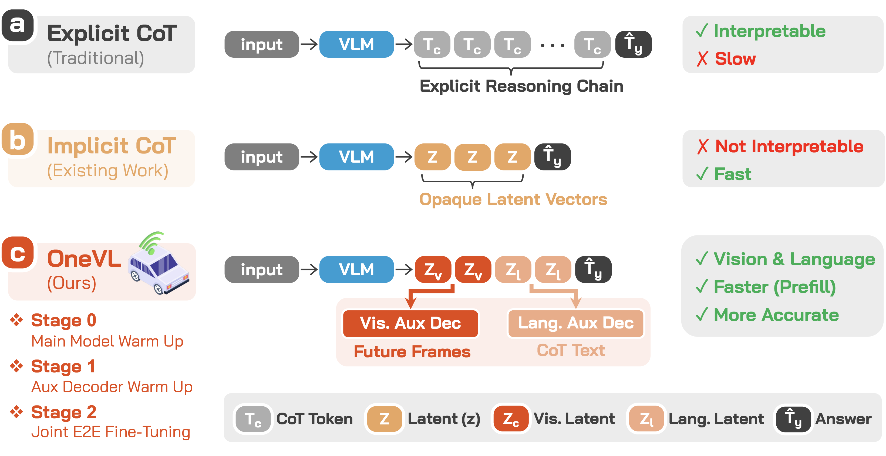
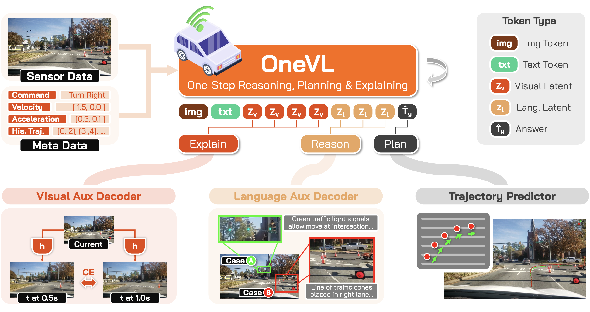

Dual Latent Tokens
35 visual + 20 language latent tokens create a tight information bottleneck that forces the model to distill only the causal structure of the scene — discouraging memorization in favor of generalizable representations.
Chain-of-Thought (CoT) reasoning has become a powerful driver of trajectory prediction in VLA-based autonomous driving, yet its autoregressive nature imposes a latency cost that is prohibitive for real-time deployment.
Latent CoT methods compress reasoning into hidden states to reduce latency, but consistently underperform explicit CoT — because purely linguistic latents encode symbolic abstractions, not the causal dynamics that govern driving.

We argue that the compression target itself must capture genuine causal relationships. A latent vector that compresses only language is merely compressing an abstraction of the world, not the underlying physical structure.
OneVL addresses this with dual auxiliary decoders: a language decoder that reconstructs text CoT, and a visual world model decoder that predicts future-frame tokens — forcing the latent space to internalize causal scene dynamics rather than symbolic summaries.
Across four benchmarks, OneVL is the first latent CoT method to surpass explicit CoT, delivering state-of-the-art accuracy at answer-only latency.

OneVL augments a pretrained VLM with a compact latent token interface and dual auxiliary decoders for multimodal explanation. During inference, the auxiliary decoders are discarded and all latent tokens are prefilled in a single parallel pass, matching answer-only AR prediction latency.
35 visual + 20 language latent tokens create a tight information bottleneck that forces the model to distill only the causal structure of the scene — discouraging memorization in favor of generalizable representations.
Recovers human-readable CoT text from language latent states, grounding the bottleneck in semantic intent: scene interpretation, object analysis, and driving decisions.
Predicts future-frame visual tokens at +0.5s and +1.0s, acting as a world model auxiliary that grounds the bottleneck in physical scene dynamics — a causal compression target that language alone cannot supply.
Training OneVL presents a unique optimization challenge: the main VLM, the language auxiliary decoder, and the visual auxiliary decoder must all be jointly optimized, yet they have fundamentally different learning objectives. A principled three-stage pipeline progressively aligns these components.
Train the main VLM end-to-end on trajectory prediction with latent tokens embedded in each training sample. The model learns to develop meaningful latent representations and establish information routing pathways.
Freeze the main model and train the auxiliary decoders to align with the stable latent representations. The language decoder learns to decode CoT text; the visual decoder learns to predict future frames.
Jointly fine-tune all three model components. Gradients from both decoders flow back into the main model, creating a virtuous cycle that tightens the information bottleneck from both sides.
OneVL achieves state-of-the-art performance across NAVSIM, ROADWork, Impromptu, and Alpamayo-R1 with a 4B parameter model, surpassing prior 8B methods. Prefill inference matches answer-only prediction speed, and an MLP variant reaches 0.24s latency (4.16 Hz) for real-world deployment.
OneVL provides human-interpretable explanations in both language and vision. The language auxiliary decoder recovers high-quality CoT text from compressed latents, while the visual auxiliary decoder generates spatially coherent future-frame previews.
OneVL is developed by the Xiaomi Embodied Intelligence Team.